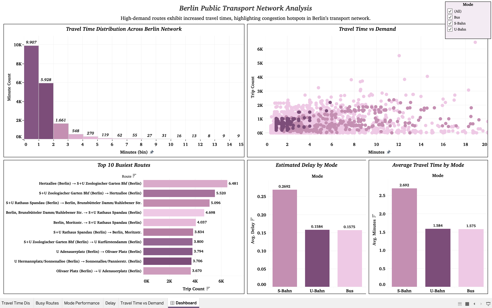
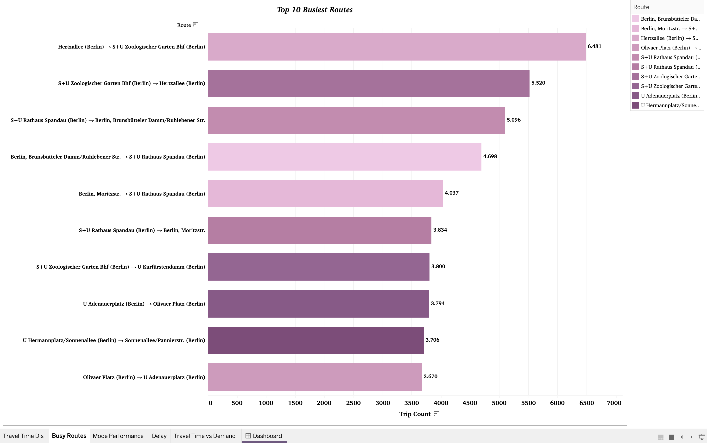
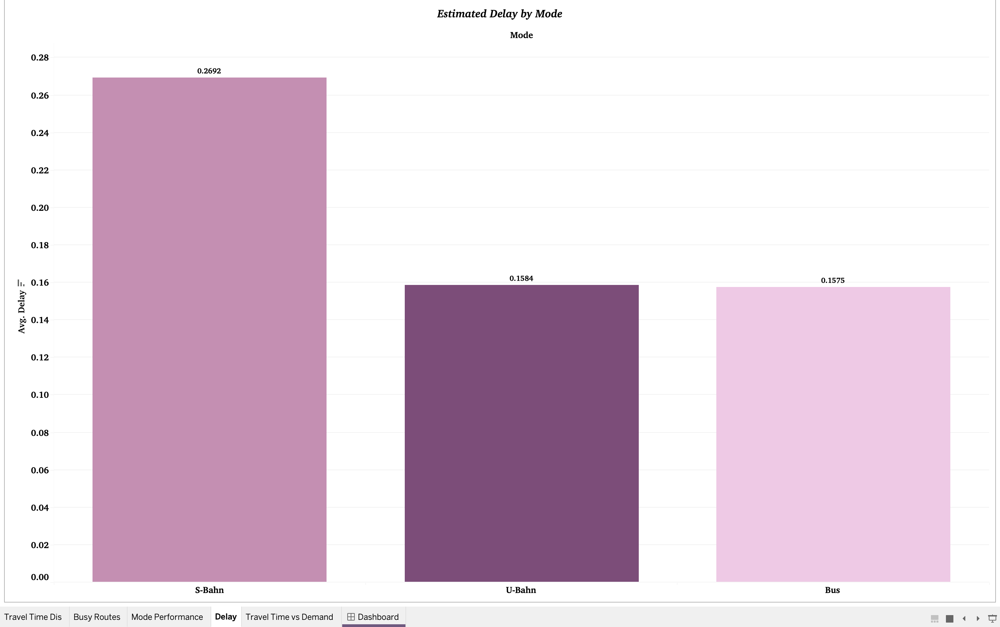
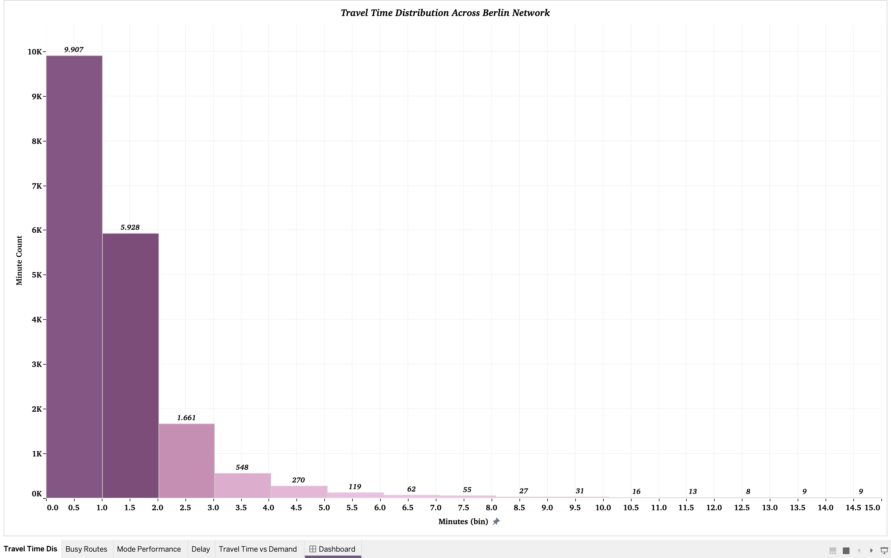
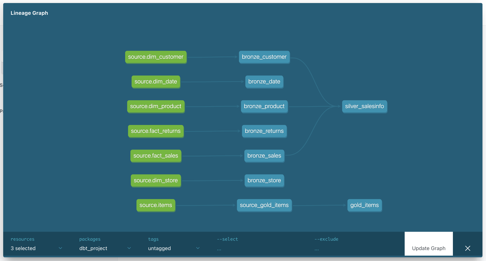

Portfolio / 2026
Understanding
customers,
behavior,
and invisible
patterns.

Hello.
I'm Nitin Singh.
I started by teaching myself web development and freelancing, building websites and working directly with clients. That experience sparked my curiosity about the customer journey: why people behave differently, where they drop off, and what drives results.
That curiosity took me into digital marketing and marketing analytics. I work with campaign performance, customer behavior, funnels, segmentation and A/B testing, using SQL, Python, Google Analytics and BI dashboards to support marketing decisions.
I learn by doing — from analyzing e-commerce data to experimenting with AI, APIs and automation. Today, I’m looking for a role in Germany where I can connect marketing, customer insights and technology. Always curious. Always learning. Always trying to understand why the numbers move.
ANALYTICS IMPACT
34M+
GTFS Records Processed
50K+
Job Listings Analyzed
1M+
E-Commerce Transactions
15+
Dashboards Built
WHAT I WORK ON
TOOLS & STACK
Marketing & Customer Analytics
Visualization & Reporting
Data Engineering
Marketing Tools & Automation
SELECTED PROJECTS
E-Commerce Sales Performance Analysis

SQL · BigQuery · Looker Studio
Analyzed 1M+ transactions to identify customer behavior, revenue drivers and conversion trends. Funnel analysis identified approximately 30% checkout drop-off and key conversion opportunities.
Developed KPI dashboards tracking revenue, average order value, conversion and customer performance.
AI Job Search Command Center


n8n · OpenAI API · Gmail API · Google Sheets · Calendar API
Built an AI-powered workflow automating job discovery, application tracking, recruiter follow-ups, and interview scheduling.
Connected Gmail, Google Sheets, OpenAI, and Calendar workflows to create a centralized job search system.
Enterprise AML Compliance Platform
PostgreSQL · Python · SQL · ETL · Data Modeling
Designed a PostgreSQL banking database for customers, accounts, transactions and AML analytics. Built Python pipelines generating 10K customers, 12K accounts and 18K beneficiaries with risk attributes.
Developed staging-to-core ETL workflows with SQL validation for duplicates, foreign keys and business rules.
Transport Network Analysis & Optimization System




Python · SQL · Tableau · Forecasting · NetworkX
Processed and analyzed 34M+ GTFS records to identify congestion patterns and transport inefficiencies.
Built forecasting models and optimization workflows supporting operational analytics.
Data Job Market Analysis - Germany

Python · Pandas · NumPy · Matplotlib
Processed 50K+ job postings analyzing skill demand, salaries and market trends.
Built automated preprocessing workflows to reduce manual analysis effort by approximately 40%. Identified high-demand skill clusters and salary trends to support market intelligence insights.
Modern Data Pipeline Architecture

dbt · Databricks · SQL · ETL · Data Modeling
Designed scalable analytics engineering workflows inspired by modern medallion architectures.
Focused on lineage tracking and modular transformations.
EXPERIENCE
Apr 2023 — Aug 2024
WhatYouTech
Performance Marketing & Analytics Analyst
Managed six Google Ads campaigns (€3K–€8K/month), contributing to a 28% increase in conversion rate. Built SQL-based funnel analyses to identify conversion drop-offs. Conducted cohort, retention and segmentation analysis, supporting a 15–20% improvement in ROI. Designed A/B tests across 8K–15K users, contributing to a 10–12% increase in CTR. Built dashboards tracking ROI, CTR, conversions and campaign KPIs.
Dec 2021 — Jun 2022
ThoughtStart
Web & Analytics Developer
Implemented Google Analytics tracking and KPI monitoring for an LMS platform with 10K+ monthly users. Analyzed website performance, helping reduce bounce rate from approximately 58% to 46%. Built dashboards and reporting workflows for engagement, enrollment and website performance. Supported AWS-based content workflows for managing and accessing digital assets.
Jul 2021 — Sep 2021
Ono Teas
Analytics & Marketing Intern
Supported digital marketing and analytics across 5+ client campaigns. Used HubSpot and Bitrix24 CRM for lead tracking and campaign workflows. Monitored traffic, engagement, conversions and campaign performance. Analyzed CRM data to track lead activity, customer interactions and follow-up performance.
EDUCATION
Feb 2024 — Sep 2025
Berlin School of Business & Innovation
M.Sc. Data Analytics
Focused on Machine Learning, Predictive Analytics, Tableau, Python for Data Analytics, and business intelligence concepts. Graduated with a GPA of 2.3 / 5 and completed several practical analytics projects beyond coursework.
Aug 2019 — Jul 2023
University of Mumbai
Bachelor of Engineering – Information Technology
Studied Database Management Systems, Data Warehousing, and Data Structures & Algorithms with a GPA of 8.6 / 10.
LANGUAGES